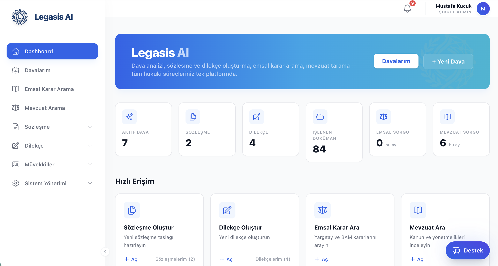

01 Doküman
Doküman analizi ve bağlam
Yüklenen dosyaya kilitlenen, parçaları birbirine bağlayan analiz.
Dava dosyası veya sözleşme yüklenir; sistem okur, metinler arasında ilişki kurar, yanıtları belge içi referansla sunar.
- Legasis genel amaçlı sohbet botu değildir; yalnızca sizin yüklediğiniz dokümanda çalışır.
- Cevaplar dosya içi konumla ilişkilendirilir; dayanak takibi kolaylaşır.
- Verileriniz yurtdışına çıkmadığı için KVKK açısından daha kontrollü bir zemindesiniz.

Ekran: soru-cevap ve yüklü doküman